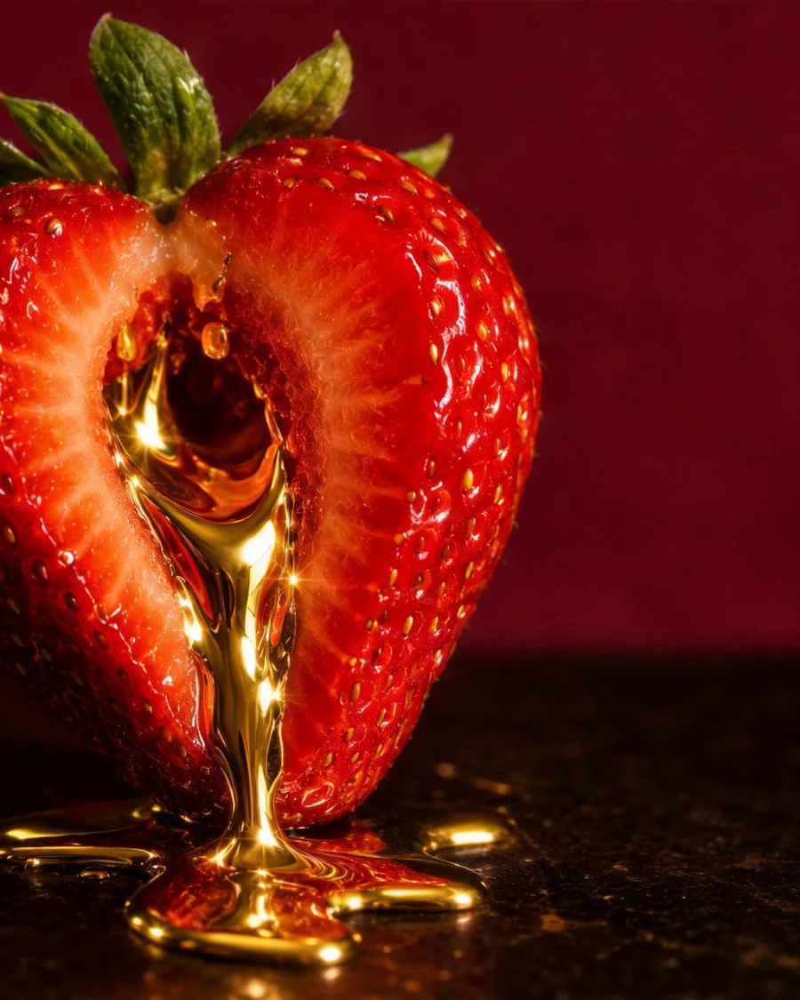

Индивидуальное обучение · Москва
Об этом
не говорят
вслух
Живые занятия и разборы, готовые лекции и работа один на один. Теория, практика с обратной связью и план на несколько недель вместо случайных советов.
- Разбор запроса, онлайн
- 5 000 ₽
- Индивидуальное занятие
- 20 000 ₽
- Приватная консультация
- по запросу
Ближайшие даты — сентябрь · 2 места · адрес после подтверждения записи


Оглавление
Четыре тома
Записанные лекции пополняются

IКунилингус
Мужчинам
Техника, темп, дыхание и обратная связь. Разбор на практике, а не список поз.
II
Сексология
Для женщин
Тело, желание и разговор о нём без стыда. Курс из записанных лекций.
III
БДСМ
Обоим
Договорённости, роли и безопасность. С чего начинают вдвоём.
 IV
IV
Индивидуальная
консультация
консультация
Один на один
Личный запрос, онлайн или в Москве. Цена и формат — в переписке.